대기환경기사 (2020-08-22 기출문제)
1과목: 대기오염 개론
1. 햇빛이 지표면에 도달하기 전에 자외선의 대부분을 흡수함으로써 지표생물권을 보호하는 대기권의 명칭은?
- 대류권
- 성층권
- 중간권
- 열권
(정답률: 81%)

2. 44m 높이의 연돌에서 배출되는 가스의 평균온도가 250℃이고, 대기의 온도가 25℃ 일 때, 이 굴뚝의 통풍력(mmH2O)은? (단, 표준상태의 가스와 공기의 밀도는 1.3kg/Sm3이고 굴뚝 안에서의 마찰손실은 무시한다.)
- 약 12.4
- 약 15.8
- 약 22.5
- 약 30.7
(정답률: 57%)
3. 다음 대기오염물질과 관련되는 주요 배출업종을 연결한 것으로 가장 적합한 것은?
- 벤젠 - 도장공업
- 염소 - 주유소
- 시안화수소 - 유리공업
- 이황화탄소 - 구리정련
(정답률: 69%)
4. 대기가 가시광선을 통과시키고 적외선을 흡수하여 열을 밖으로 나가지 못하게 함으로써 보온 작용을 하는 것을 무엇이라 하는가?
- 온실효과
- 복사균형
- 단파복사
- 대기의 창
(정답률: 84%)
5. 대기오염이 식물에 미치는 영향에 관한 설명으로 가장 거리가 먼 것은?
- SO2는 회백색 반점을 생성하며, 피해부분은 엽육세포이다.
- PAN은 유리화 은백색 광택을 나타내며, 주로 해면연조직에 피해를 준다.
- NO2는 불규칙 흰색 또는 갈색으로 변화되며, 피해부분은 엽육세포이다.
- HF는 SO2와 같이 잎 안쪽부분에 반점을 나타내기 시작하며, 늙은 잎에 특히 민감하고, 밤이 낮보다 피해가 크다.
(정답률: 77%)
6. 오존에 관한 설명으로 옳지 않은 것은?
- 대기 중 오존은 온실가스로 작용한다.
- 대기 중에서 오존의 배경농도는 0.1~0.2ppm 범위이다.
- 단위체적당 대기 중에 포함된 오존의 분자수(mol/cm3)로 나타낼 경우 약 지상 25km 고도에서 가장 높은 농도를 나타낸다.
- 오존전량(total overhead amount)은 일반적으로 적도 지역에서 낮고, 극지의 인근 지점에서는 높은 경향을 보인다.
(정답률: 67%)
7. 다음은 황화합물에 관한 설명 중 ( )안에 가장 알맞은 것은?
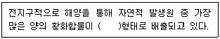
- H2S
- CS2
- OCS
- (CH3)2S
(정답률: 64%)
8. 다음 중 지구온난화 지수가 가장 큰 것은?
- CH4
- SF6
- N2O
- HFCs
(정답률: 75%)
9. 시정장애에 관한 설명 중 옳지 않은 것은?
- 시정장애 직접 원인은 부유분진 중 극미세먼지 때문이다.
- 시정장애 물질들은 주민의 호흡기계 건강에 영향을 미친다.
- 빛이 대기를 통과할 때 시정장애 물질들은 빛을 산란 또는 흡수한다.
- 2차 오염물질들이 서로 반응, 응축, 응집하여 생성된 물질들이 직접적인 원이다.
(정답률: 66%)
10. 석면이 가지고 있는 일반적인 특성과 거리가 먼 것은?
- 절연성
- 내화성 및 단열성
- 흡습성 및 저인장성
- 화학적 불활성
(정답률: 65%)
11. A굴뚝으로부터 배출되는 SO2가 풍하측 5000m 지점에서 지표 최고 농도를 나타냈을 때, 유효굴뚝 높이(m)는? (단, Sutton의 확산식을 사용하고, 수직확산계수를 0.07, 대기안정도 지수(n)는 0.25 이다.)
- 약 120
- 약 140
- 약 160
- 약 180
(정답률: 43%)
12. 산성비에 관한 설명 중 옳은 것은?
- 산성비 생성의 주요 원인물질은 다이옥신, 중금속 등이다.
- 일반적으로 산성비에 대한 내성은 침엽수가 활엽수보다 강하다.
- 산성비란 정상적인 빗물의 pH7 보다 낮게 되는 경우를 말한다.
- 산성비로 인해 호수나 강이 산성화되면 물고기 먹이가 되는 플랑크톤의 생장을 촉진한다.
(정답률: 62%)
13. 다음 [보기]가 설명하는 주위 대기조건에 따른 연기의 배출형태를 옳게 나열한 것은?
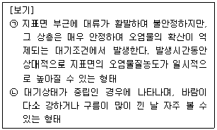
- ㉠ 지붕형, ㉡ 원추형
- ㉠ 훈증형, ㉡ 원추형
- ㉠ 구속형, ㉡ 훈증형
- ㉠ 부채형, ㉡ 훈증형
(정답률: 64%)
14. 상온에서 녹황색이고 강한 자극성 냄새를 내는 기체로서 공기보다 무겁고 표백작용이 강한 오염물질은?
- 염소
- 아황산가스
- 이산화질소
- 포름알데히드
(정답률: 74%)
15. 다음 ( )안에 들어갈 용어로 옳은 것은?
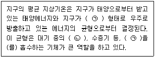
- ㉠ 자외선, ㉡ CO
- ㉠ 적외선, ㉡ CO
- ㉠ 자외선, ㉡ CO2
- ㉠ 적외선, ㉡ CO2
(정답률: 72%)
16. 로스앤젤레스 스모그 사건에 대한 설명 중 옳지 않은 것은?
- 대기는 침강성 역전 상태였다.
- 주 오염성분은 NOx, O3, PAN, 탄화수소이다.
- 광화학적 및 열적 산화반응을 통해서 스모그가 형성되었다.
- 주 오염 발생원은 가정 난방용 석탄과 화력발전소의 매연이다.
(정답률: 77%)
17. 다음 ( )안에 가장 적합한 물질은?
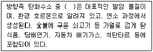
- 벤조피렌
- 나프탈렌
- 안트라센
- 톨루엔
(정답률: 78%)
18. 빛의 소멸계수(σext)가 0.45km-1인 대기에서, 시정거리의 한계를 빛의 강도가 초기 강도의 95%가 감소했을 때의 거리라고 정의할 경우 이 때 시정거리 한계(km)는? (단, 광도는 Lambert-Beer 법칙을 따르며, 자연대수로 적용한다.)
- 약 0.1
- 약 6.7
- 약 8.7
- 약 12.4
(정답률: 52%)
19. 안료, 색소, 의약품 제조공업에 이용되며 색소침착, 손·발바닥의 각화, 피부암 등을 일으키는 물질로 옳은 것은?
- 납
- 크롬
- 비소
- 니켈
(정답률: 72%)
20. Fick의 확산방정식을 실제 대기에 적용시키기 위한 추가적 가정에 대한 내용과 가장 거리가 먼 것은?
- 오염물질은 플룸(plum)내에서 소멸된다.
- 바람에 의한 오염물질의 주 이동방향은 x축이다.
- 풍향, 풍속, 온도, 시간에 따른 농도변화가 없는 정상상태 분포를 가정한다.
- 풍속은 x, y, z 좌표시스템 내의 어느 점에서든 일정하다.
(정답률: 69%)
2과목: 연소공학
21. 연료의 연소 시 과잉공기의 비율을 높여 생기는 현상으로 옳지 않은 것은?
- 에너지손실이 커진다.
- 연소가스의 희석효과가 높아진다.
- 공연비가 커지고 연소온도가 낮아진다.
- 화염의 크기가 커지고 연소가스 중 불완전 연소물질의 농도가 증가한다.
(정답률: 67%)
22. 다음 가스 중 1Sm3를 완전연소 할 때 가장 많은 이론공기량(Sm3)이 요구되는 것은?(단, 가스는 순수가스임)
- 에탄
- 프로판
- 에틸렌
- 아세틸렌
(정답률: 73%)
23. 기체연료 연소방식 중 예혼합연소에 관한 설명으로 옳지 않은 것은?
- 연소조절이 쉽고 화염길이가 짧다.
- 역화의 위험이 없으며 공기를 예열할 수 있다.
- 화염온도가 높아 연소부하가 큰 경우에 사용이 가능하다.
- 연소기 내부에서 연료와 공기의 혼합비가 변하지 않고 균일하게 연소된다.
(정답률: 67%)
24. 가스의 조성이 CH4 70%, C2H6 20%, C3H8 10%인 혼합가스의 폭발범위로 가장 적합한 것은? (단, CH4의 폭발범위 : 5 ~ 15%, C2H6폭발범위 : 3 ~ 12.5%, C3H8폭발범위 : 2.1 ~ 9.5%이며, 르샤틀리의 식을 적용한다.)
- 약 2.9 ~ 12%
- 약 3.1 ~ 13%
- 약 3.9 ~ 13.7%
- 약 4.7 ~ 7.8%
(정답률: 63%)
25. 다음 설명에 해당하는 기체연료는?
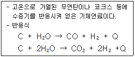
- 수성 가스
- 오일 가스
- 고로 가스
- 발생로 가스
(정답률: 72%)
26. 다음 중 기체연료의 확산연소에 사용되는 버너 형태로 가장 적합한 것은?
- 심지식 버너
- 회전식 버너
- 포트형 버너
- 증기 분무식 버너
(정답률: 61%)
27. 연소실 열발생율에 대한 설명으로 옳은 것은?
- 연소실의 단위면적, 단위시간당 발생되는 열량이다.
- 연소실의 단위용적, 단위시간당 발생되는 열량이다.
- 단위시간에 공급된 연료의 중량을 연소실 용적으로 나눈 값이다.
- 연소실에 공급된 연료의 발열량을 연소실 면적으로 나눈 값이다.
(정답률: 56%)
28. 1.5%(무게기준) 황분을 함유한 석탄 1143kg을 이론적으로 완전연소시킬 때 SO2 발생량(Sm3)은?(단, 표준상태 기준이며, 황분은 전량 SO2로 전환된다.)
- 12
- 18
- 21
- 24
(정답률: 59%)
29. 쓰레기 이송방식에 따라 가동화격자(moving stoker)를 분류할 때 다음 [보기]가 설명하는 화격자 방식은?
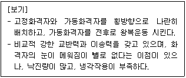
- 직렬식
- 병렬요동식
- 부채 반전식
- 회전 로울러식
(정답률: 72%)
30. 코크스나 목탄 등이 고온으로 될 때 빨간 짧은 불꽃을 내면서 연소하는 것으로, 휘발성분이 없는 고체연료의 연소형태는?
- 자기연소
- 분해연소
- 표면연소
- 내부연소
(정답률: 70%)
31. 다음 연료 중 착화온도(℃)의 대략적인 범위가 옳지 않은 것은?(오류 신고가 접수된 문제입니다. 반드시 정답과 해설을 확인하시기 바랍니다.)
- 목탄 : 320~370℃
- 중유 : 430~480℃
- 수소 : 580~600℃
- 메탄 : 650~750℃
(정답률: 52%)
32. 벙커 C유에 2.5%의 S성분이 함유되어 있을 때 건조 연소가스량 중의 SO2양(%)은? (단, 공기비 1.3, 이론 공기량 12Sm3/kg-oil, 이론 건조연소 가스량 12.5Sm3/kg-oil이고, 연료 중의 황성분은 95%가 연소되어 SO2로 된다.)
- 약 0.1
- 약 0.2
- 약 0.3
- 약 0.4
(정답률: 34%)
33. 배기장치의 송풍기에서 1000Sm3/min의 배기가스를 배출하고 있다. 이 장치의 압력손실은 250 mmH2O이고, 송풍기의 효율이 65%라면 이 장치를 움직이는데 소요되는 동력은(kW)은?
- 43.61
- 55.36
- 62.84
- 78.57
(정답률: 58%)
34. [보기]에서 설명하는 내용으로 가장 적합한 유류연소버너는?
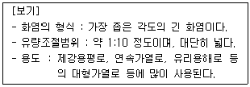
- 유압식
- 회전식
- 고압기류식
- 저압기류식
(정답률: 74%)
35. 유동층연소에서 부하변동에 대한 적응성이 좋지 않은 단점을 보완하기 위한 방법으로 가장 거리가 먼 것은?
- 층의 높이를 변화시킨다,
- 층 내의 연료비율을 고정시킨다.
- 공기분산판을 분할하여 층을 부분적으로 유동시킨다.
- 유동층을 몇 개의 셀로 분할하여 부하에 따라 작동시키는 수를 변화시킨다.
(정답률: 68%)
36. 탄소 80%, 수소 15%, 산소 5% 조성을 갖는 액체연료의 (CO2)max(%)는? (단, 표준상태 기준)
- 12.7
- 13.7
- 14.7
- 15.7
(정답률: 43%)
37. 메탄 1mol이 공기비로 1.2로 연소할 때의 등가비는?
- 0.63
- 0.83
- 1.26
- 1.62
(정답률: 56%)
38. 메탄의 고위발열량이 9900 kcal/Sm3이라면 저위발열량(kcal/Sm3)은?
- 8540
- 8620
- 7890
- 8940
(정답률: 61%)
39. 액화천연가스의 대부분을 차지하는 구성성분은?
- CH4
- C2H6
- C3H8
- C4H10
(정답률: 72%)
40. H2 40%, CH4 20%, C3H8 20%, CO 20%의 부피조성을 가진 기체연료 1Sm3을 공기비 1.1로 연소시킬 때 필요한 실제공기량(Sm3)은?
- 약 8.1
- 약 8.9
- 약 10.1
- 10.9
(정답률: 46%)
3과목: 대기오염 방지기술
41. 전기집진장치로 함진가스를 처리할 때 입자의 겉보기 고유저항이 높을 경우의 대책으로 옳지 않은 것은?
- 아황산가스를 조절제로 투입한다.
- 처리가스의 습도를 높게 유지한다.
- 탈진의 빈도를 늘리거나 타격강도를 높인다.
- 암모니아 조절제로 주입하고, 건식집진장치를 사용한다.
(정답률: 60%)
42. 다음 각 집진장치의 유속과 집진특성에 대한 설명 중 옳지 않은 것은?
- 건식 전기집진장치는 재비산 한계내에서 기본유속을 정한다.
- 벤투리스크러버와 제트스크러버는 기본유속이 작을수록 집진율이 높다.
- 중력집진장치와 여과집진장치는 기본유속이 작을수록 미세한 입자를 포집한다.
- 원심력집진장치는 적정 한계내에서는 입구유속이 빠를수록 효율은 높은 반면 압력손실은 높아진다.
(정답률: 59%)
43. 적용 방법에 따른 충전탑(packed tower)과 단탑(plate tower)을 비교한 설명으로 가장 거리가 먼 것은?
- 포말성 흡수액일 경우 충전탑이 유리하다.
- 흡수액에 부유물이 포함되어 있을 경우 단탑을 사용하는 것이 더 효율적이다.
- 온도 변화에 따른 팽창과 수축이 우려될 경우에는 충전제 손상이 예상되므로 단탑이 유리하다.
- 운전 시 용매에 의해 발생하는 용해열을 제거해야 할 경우 냉각오일을 설치하기 쉬운 충전탑이 유리하다.
(정답률: 55%)
44. 먼지함유량이 A인 배출가스에서 C만큼 제거시키고 B만큼 통과시키는 집진장치의 효율산출식과 가장 거리가 먼 것은?
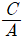
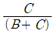
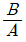
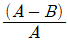
(정답률: 67%)
45. 평판형 전기집진장치의 집진판 사이의 간격이 10cm, 가스의 유속은 3m/s, 입자가 집진극으로 이동하는 속도가 4.8cm/s 일 때, 층류영역에서 입자를 완전히 제거하기 위한 이론적인 집진극의 길이(m)는?
- 1.34
- 2.14
- 3.13
- 4.29
(정답률: 46%)
46. 습식탈황법의 특징에 대한 설명 중 옳지 않은 것은?
- 반응속도가 빨라 SO2의 제거율이 높다.
- 처리한 가스의 온도가 낮아 재가열이 필요한 경우가 있다.
- 장치의 부식 위험이 있고, 별도의 폐수처리시설이 필요하다.
- 상업성 부산물의 회수가 용이하지 않고, 보수가 어려우며, 공정의 신뢰도가 낮다.
(정답률: 63%)
47. 배출가스 중 염화수소 제거에 관한 설명으로 옳지 않은 것은?
- 누벽탑, 충전탑, 스크러버 등에 의해 용이하게 제거 가능하다.
- 염화수소 농도가 높은 배기가스를 처리하는 데는 관외 냉각형, 염화수소 농도가 낮은 때에는 충전탑 사용이 권장된다.
- 염화수소의 용해열이 크고 온도가 상승하면 염화수소의 분압이 상승하므로 완전 제거를 목적으로 할 경우에는 충분히 냉각할 필요가 있다.
- 염산은 부식성이 있어 장치는 플라스틱, 유리라이닝, 고무라이닝, 폴리에틸렌 등을 사용해서는 안 되며 충전탑, 스크러버를 사용할 경우에는 mist catcher는 설치할 필요가 없다.
(정답률: 60%)
48. 가스 중 불화수소를 수산화나트륨 용액과 향류로 접촉시켜 87% 흡수시키는 충전탑의 흡수율을 99.5%로 향상시키기 위한 충전탑의 높이는? (단, 흡수액상의 불화수소의 평형분압은 0이다.)
- 2.6배 높아져야 함
- 5.2배 높아져야 함
- 9배 높아져야 함
- 18배 높아져야 함
(정답률: 44%)
49. 다음 [보기]가 설명하는 원심력 송풍기는?
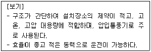
- 터보형
- 평판형
- 다익형
- 프로펠러형
(정답률: 54%)
50. 중력집진장치에서 집진효율을 향상시키기 위한 조건으로 옳지 않은 것은?
- 침강실의 입구폭을 작게 한다.
- 침강실 내의 가스흐름을 균일하게 한다.
- 침강실 내의 처리가스의 유속을 느리게 한다.
- 침강실의 높이는 낮게 하고, 길이는 길게한다.
(정답률: 56%)
51. 다음 [보기]가 설명하는 흡착장치로 옳은 것은?
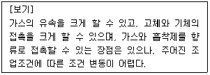
- 유동층 흡착장치
- 이동층 흡착장치
- 고정층 흡착장치
- 원통형 흡착장치
(정답률: 58%)
52. 45° 곡관의 반경비가 2.0 일 때, 압력손실계수는 0.27이다. 속도압이 26 mmH2O일 때, 곡관의 압력손실(mmH2O)은?
- 1.5
- 2.0
- 3.5
- 4.0
(정답률: 44%)
53. 후드의 종류에 대한 설명으로 옳지 않은 것은?
- 일반적으로 포집형 후드는 다른 후드보다 작업방해가 적고, 적용이 유리하다.
- 포위식 후드의 예로는 완전 포위식인 글러브 상자와 부분 포위식인 실험실 후드, 페인트 분무도장 후드가 있다.
- 후드는 동작원리에 따라 크게 포위식과 외부식으로, 포위식은 다시 레시버형 또는 수형과 포집형 후드로 구분할 수 있다.
- 포위식 후드는 적은 제어풍량으로 만족할만한 효과를 기대할 수 있으나, 유입공기량이 적어 충분한 후드 개구면 속도를 유지하지 못하면 오히려 외부로 오염물질이 배출될 우려가 있다.
(정답률: 54%)
54. 공기의 유속과 점도가 각각 1.5m/s, 0.0187 cP일 때, 레이놀즈수를 계산한 결과 1950이었다. 이때 덕트 내를 이동하는 공기의 밀도(kg/m3)는 약 얼마인가?(단, 덕트의 직경은 75 mm이다.)
- 0.23
- 0.29
- 0.32
- 0.40
(정답률: 53%)
55. 전기집진장치의 각종 장해현상에 따른 대책으로 가장 거리가 먼 것은?
- 먼지의 비저항이 낮아 재비산 현상이 발생할 경우 baffle을 설치한다.
- 배출가스의 점성이 커서 역전리 현상이 발생할 경우 집진극의 타격을 강하게 하거나 빈도수를 늘린다.
- 먼지의 비저항이 비정상적으로 높아 2차 전류가 현저하게 떨어질 경우 스파크 횟수를 줄인다.
- 먼지의 비저항이 비정상적으로 높아 2차 전류가 현저하게 떨어질 경우 조습용 스프레이의 수량을 늘린다.
(정답률: 69%)
56. 일반적인 활성탄 흡착탑에서의 화재방지에 관한 설명으로 가장 거리가 먼 것은?
- 접촉시간은 30초 이상, 선속도는 0.1m/s 이하로 유지한다.
- 축열에 의한 발열을 피할 수 있도록 형상이 균일한 조립상 활성탄을 사용한다.
- 사영역이 있으면 축열이 일어나므로 활성탄층의 구조를 수직 또는 경사지게 하는 편이 좋다.
- 운전 초기에는 흡착열이 발생하며 15~30분 후에는 점차 낮아지므로 물을 충분히 뿌려주어 30분 정도 공기를 공회전시킨 다음 정상 가동한다.
(정답률: 46%)
57. 광화학현미경을 이용하여 입자의 투영면적을 관찰하고 그 투영면적으로부터 먼지의 입경을 측정하는 방법 중 “입자의 투영면적 가장자리에 접하는 가장 긴 선의 길이”로 나타내는 입경(직경)은?
- 등면적 직경
- Feret 직경
- Martin 직경
- Heyhood 직경
(정답률: 66%)
58. 다음 중 활성탄으로 흡착 시 효과가 가장 적은 것은?
- 알코올류
- 아세트산
- 담배연기
- 일산화질소
(정답률: 51%)
59. 배출가스 중의 NOx 제거법에 관한 설명으로 옳지 않은 것은?
- 비선택적인 촉매환원에서는 NOx 뿐만 아니라 O2까지 소비된다.
- 선택적 촉매환원법의 최적온도 범위는 700~850℃ 정도이며, 보통 50% 정도의 NOx를 저감시킬 수 있다.
- 선택적 촉매환원법은 TiO2와 V2O5를 혼합하여 제조한 촉매에 NH3, H2, CO, H2S 등의 환원가스를 작용시켜 NOx를 N2로 환원시키는 방법이다.
- 배출가스 중의 NOx 제거는 연소조절에 의한 제어법보다 더 높은 NOx 제거효율이 요구되는 경우나 연소방식을 적용할 수 없는 경우에 사용된다.
(정답률: 62%)
60. 반지름 250 mm, 유효높이 15 m인 원통형 백필터를 사용하여 농도 6g/m3인 배출가스를 20 m3/s로 처리하고자 한다. 겉보기 여과속도를 1.2 cm/s로 할 때 필요한 백필터의 수는?
- 49
- 62
- 65
- 71
(정답률: 34%)
4과목: 대기오염 공정시험기준(방법)
61. 대기오염공정시험기준상 고성능 이온크로마토그래피의 장치 중 써프렛서에 관한 설명으로 가장 거리가 먼 것은?
- 장치의 구성상 써프렛서 앞에 분리관이 위치한다.
- 용리액에 사용되는 전해질 성분을 제거하기 위한 것이다.
- 관형 써프렛서에 사용하는 충전물은 스티롤계 강산형 및 강염기형 수지이다.
- 목적성분의 전기전도도를 낮추어 이온성분을 고감도로 검출할 수 있게 해준다.
(정답률: 45%)
62. 굴뚝 배출가스 중 먼지농도를 반자동식 시료채취기에 의해 분석하는 경우 채취장치 구성에 관한 설명으로 옳지 않은 것은?
- 흡인노즐의 꼭지점은 80° 이하의 예각이 되도록 하고 주위장치에 고정시킬 수 있도록 충분한 각(가급적 수직)이 확보되도록 한다.
- 흡인노즐의 안과 밖의 가스흐름이 흐트러지지 않도록 흡인노즐 안지름(d)은 3 mm이상으로 하고, d는 정확히 측정하여 0.1 mm 단위까지 구하여 둔다.
- 흡입관은 수분농축 방지를 위해 시료가스 온도를 120±14℃로 유지할 수 있는 가열기를 갖춘 보로실리케이트, 스테인리스강 재질 또는 석영 유리관을 사용한다.
- 피토관은 피토관 계수가 정해진 L형 피토관(C:1.0 전후 또는 S형(웨스턴형 C:0.85 전후) 피토관으로서 배출가스 유속의 계속적인 측정을 위해 흡입관에 부착하여 사용한다.
(정답률: 56%)
63. 굴뚝에서 배출되는 건조배출가스의 유량을 계산할 때 필요한 값으로 옳지 않은 것은? (단, 굴뚝의 단면은 원형이다.)
- 굴뚝 단면적
- 배출가스 평균온도
- 배출가스 평균동압
- 배출가스 중의 수분량
(정답률: 39%)
64. 대기오염공정시험기준상 원자흡수분광광도법에서 사용하는 용어의 정의로 옳지 않은 것은?
- 선프로파일(Line Profile) : 파장에 대한 스펙트럼선의 강도를 나타내는 곡선
- 공명선(Resonance Line) : 목적하는 스펙트럼선에 가까운 파장을 갖는 다른 스펙트럼선
- 예복합 버너(Premix Type Burner) : 가연성 가스, 조연성 가스 및 시료를 분무실에서 혼합시켜 불꽃 중에 넣어주는 방식의 버너
- 분무실(Nebulizer-Chamber) : 분무기와 함께 분무된 시료용액의 미립자를 더욱 미세하게 해주는 한편 큰 입자와 분리시키는 작용을 갖는 장치
(정답률: 66%)
65. 굴뚝 배출가스 내의 산소측정방법 중 덤벨형(dumb-bell) 자리력 분석계에 관한 설명으로 옳지 않은 것은?
- 측정셀은 시료 유통실로서 자극사이에 배치하여 덤벨 및 불균형 자계발생 자극편을 내장한 것이어야 한다.
- 편위검출부는 덤벨의 편위를 검출하기 위한 것으로 광원부와 덤벨봉에 달린 거울에서 반사하는 빛을 받는 수광기로 된다.
- 피드백코일은 편위량을 없애기 위하여 전류에 의하여 자기를 발생시키는 것으로 일반적으로 백금선이 이용된다.
- 덤벨은 자기화율이 큰 유리 등으로 만들어진 중공의 구체를 막대 양 끝에 부착한 것으로 수소 또는 헬륨을 봉입한 것을 말한다.
(정답률: 55%)
66. 환경대기 중 석면농도를 측정하기 위해 위상차현미경을 사용한 계수방법에 관한 설명으로 ( )안에 알맞은 것은?
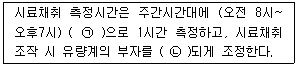
- ㉠ 1 L/min, ㉡ 1 L/min
- ㉠ 1 L/min, ㉡ 10 L/min
- ㉠ 10 L/min, ㉡ 1 L/min
- ㉠ 10 L/min, ㉡ 10 L/min
(정답률: 62%)
67. 대기오염공정시험기준상 일반화학분석에 대한 공통적인 사항으로 따로 규정이 없는 경우 사용해야 하는 시약의 규격으로 옳지 않은 것은?
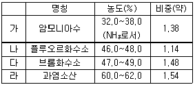
- 가
- 나
- 다
- 라
(정답률: 57%)
68. 어떤 굴뚝 배출가스의 유속을 피토관으로 측정하고자 한다. 동압 측정 시 확대율이 10배인 경사 마노미터를 사용하여 액주 55 mm를 얻었다. 동압은 약 몇 mmH2O인가? (단, 경사 마노미터에는 비중 0.85의 톨루엔을 사용한다.)
- 4.7
- 5.5
- 6.5
- 7.0
(정답률: 40%)
69. 굴뚝 배출가스량이 125 Sm3/h 이고, HCl농도가 200ppm 일 때, 5000L 물에 2시간 흡수시켰다. 이 때 이 수용액의 pOH는? (단, 흡수율은 60% 이다.)
- 8.5
- 9.3
- 10.4
- 13.3
(정답률: 37%)
70. 대기오염공정시험기준상 화학분석 일반사항에 대한 규정 중 옳지 않은 것은?
- “약”이란 그 무게 또는 부피에 대하여 ±10% 이상의 차가 있어서는 안 된다.
- 냉수는 15℃ 이하, 온수는 60~70℃, 열수는 약 100℃를 말한다.
- 방울수라 함은 10℃에서 정제수 10방울을 떨어뜨릴 때 그 부피가 약 1 mL되는 것을 뜻한다.
- 밀봉용기라 함은 물질을 취급 또는 보관하는 동안에 기체 또는 미생물이 침입하지 않도록 내용물을 보호하는 용기를 뜻한다.
(정답률: 72%)
71. 대기오염공정시험기준상 원자흡수분광광도법에서 분석시료의 측정조건결정에 관한 설명으로 가장 거리가 먼 것은?
- 분석선 선택 시 감도가 가장 높은 스펙트럼선을 분석선으로 하는 것이 일반적이다.
- 양호한 SN비를 얻기 위하여 분광기의 슬릿폭은 목적으로 하는 분석선을 분리할 수 있는 범위 내에서 되도록 넓게 한다(이웃의 스펙트럼선과 겹치지 않는 범위 내에서).
- 붗꽃 중에서의 시료의 원자밀도 분포와 원소 불꽃의 상태 등에 따라 다르므로 불꽃의 최적위치에서 빛이 투과하도록 버너의 위치를 조절한다.
- 일반적으로 광원램프의 전류값이 낮으면 램프의 감도가 떨어지는 등 수명이 감소하므로 광원램프는 장치의 성능이 허락하는 범위 내에서 되도록 높은 전류값에서 동작시킨다.
(정답률: 55%)
72. 굴뚝 내의 온도(θs)는 133℃이고, 정압(Ps)은 15 mmHg이며 대기압(Pa)은 745 mmHg이다. 이 때 대기오염공정시험기준상 굴뚝 내의 배출가스 밀도(kg/m3)는? (단, 표준상태의 공기의 밀도(γ0)는 1.3kg/Sm3이고, 굴뚝 내 기체 성분은 대기와 같다.)
- 0.744
- 0.874
- 0.934
- 0.984
(정답률: 44%)
73. 고용량공기시료채취기를 이용하여 배출가스 중 비산먼지의 농도를 계산하려고 한다. 풍속이 0.5m/s 미만 또는 10m/s 이상 되는 시간이 전 채취시간의 50% 이상일 때 풍속에 대한 보정계수는?
- 1.0
- 1.2
- 1.4
- 1.5
(정답률: 62%)
74. 굴뚝 배출가스 중 아황산가스의 연속자동측정방법의 종류로 옳지 않은 것은?
- 불꽃광도법
- 광전도전위법
- 자외선흡수법
- 용액전도율법
(정답률: 41%)
75. 대기오염공정시험기준상 환경대기 중 정가스상 물질의 시료 채취방법에 관한 설명으로 옳지 않은 것은?
- 용기채취법에서 용기는 일반적으로 수소 또는 헬륨 가스가 충진된 백(bag)을 사용한다.
- 용기채취법은 시료를 일단 일정한 용기에 채취한 다음 분석에 이용하는 방법으로 채취관 - 용기, 또는 채취관 - 유량조절기 - 흡입펌프 - 용기로 구성된다.
- 직접채취법에서 채취관은 일반적으로 4불화에틸렌수지(teflon), 경질유리, 스테인리스강제 등으로 된 것을 사용한다.
- 직접채취법에서 채취관의 길이는 5m 이내로 되도록 짧은 것이 좋으며, 그 끝은 빗물이나 곤충 기타 이물질이 들어가지 않도록 되어 있는 구조이어야 한다.
(정답률: 48%)
76. 배출가스 중 굴뚝 배출 시료채취방법 중 분석대상기체가 포름알데히드일 때 채취관, 도관의 재질로 옳지 않은 것은?
- 석영
- 보통강철
- 경질유리
- 불소수지
(정답률: 67%)
77. 굴뚝의 배출가스 중 구리화합물을 원자흡수분광광도법으로 분석할 대의 적정파장(nm)은?
- 213.8
- 228.8
- 324.8
- 357.9
(정답률: 49%)
78. 대기오염공정시험기준상 비분산적외선분광분석법의 용어 및 장치 구성에 관한 설명으로 옳지 않은 것은?
- 제로 드리프트(Zero Drift)는 측정기의 교정범위눈금에 대한 지시값의 일정기간 내의 변동을 말한다.
- 비교가스는 시료 셀에서 적외선 흡수를 측정하는 경우 대조가스로 사용하는 것으로 적외선을 흡수하지 않는 가스를 말한다.
- 광원은 원칙적으로 흑체발광으로 니크롬선 또는 탄화규소의 저항체에 전류를 흘려 가열한 것을 사용한다.
- 시료셀은 시료가스가 흐르는 상태에서 양단의 창을 통해 시료광속이 통과하는 구조를 갖는다.
(정답률: 47%)
79. 다음 굴뚝 배출가스를 분석할 때 아연환원 나프틸에틸렌다이아민법이 주 시험방법인 물질로 옳은 것은?
- 페놀
- 브롬화합물
- 이황화탄소
- 질소산화물
(정답률: 43%)
80. 환경대기 중 아황산가스를 파라로자닐린법으로 분석할 때 다음 간섭물질에 대한 제거방법으로 옳은 것은?
- NOx : 측정기간을 늦춘다.
- Cr : pH를 4.5 이하로 조절한다.
- O3 : 설퍼민산(NH3SO3)을 사용한다.
- Mn, Fe : EDTA 및 인산을 사용한다.
(정답률: 53%)
5과목: 대기환경관계법규
81. 대기환경보전법령상 황함유기준에 부적합한 유류를 판매하여 그 해당 유류의 회수처리명령을 받은 자는 시·도지사 등에게 그 명령을 받은날로부터 며칠 이내에 이행완료보고서를 제출하여야 하는가?
- 5일 이내에
- 7일 이내에
- 10일 이내에
- 30일 이내에
(정답률: 44%)
82. 대기환경보전법령상 자동차 연료형 첨가제의 종류가 아닌 것은?
- 세척제
- 청정분산제
- 성능 향상제
- 유동성 향상제
(정답률: 51%)
83. 대기환경보전법령상 용어의 뜻으로 틀린 것은?
- 대기오염물질 : 대기 중에 존재하는 물질 중 심사·평가 결과 대기오염의 원인으로 인정된 가스·입자상물질로서 환경부령으로 정하는 것을 말한다.
- 기후·생태계 변화유발물질 : 지구 온난화 등으로 생태계의 변화를 가져올 수 있는 기체상물질로서 온실가스와 환경부령으로 정하는 것을 말한다.
- 매연 : 연소할 때에 생기는 유리 탄소가 주가 되는 미세한 입자상물질을 말한다.
- 촉매제 : 자동차에서 배출되는 대기오염물질을 줄이기 위하여 자동차에 부착 또는 교체하는 장치로서 환경부령으로 정하는 저감효율에 적합한 장치를 말한다.
(정답률: 63%)
84. 대기환경보전법령상 수도권대기환경청장, 국립환경과학원장 또는 한국환경공단이 설치하는 대기오염 측정망의 종류에 해당하지 않는 것은?
- 대기오염물질의 국가배경농도와 장거리 이동현황을 파악하기 위한 국가배경농도측정망
- 대기오염물질의 지역배경농도를 측정하기 위한 교외대기측정망
- 도시지역의 휘발성유기화합물 등의 농도를 측정하기 위한 광화학대기오염물질측정망
- 대기 중의 중금속 농도를 측정하기 위한 대기중금속측정망
(정답률: 66%)
85. 대기환경보전법령상 초과부과금 산정기준 중 오염물질과 그 오염물질 1kg당 부과금액(원)의 연결로 모두 옳은 것은?
- 황산화물 - 500, 암모니아 - 1400
- 먼지 - 6000, 이황화탄소 - 2300
- 불소화합물 - 7400, 시안화수소 - 7300
- 염소 - 7400, 염화수소 - 1600
(정답률: 56%)
86. 다음은 대기환경보전법령상 대기오염물질 배출시설기준이다. ( )안에 알맞은 것은?
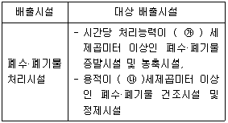
- ㉮ 0.5, ㉯ 0.3
- ㉮ 0.3, ㉯ 0.15
- ㉮ 0.3, ㉯ 0.3
- ㉮ 0.5, ㉯ 0.15
(정답률: 39%)
87. 대기환경관계법령상 자가측정 대상 및 방법에 관한 기준이다. ( )안에 알맞은 것은?
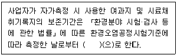
- 6개월
- 9개월
- 1년
- 2년
(정답률: 62%)
88. 대기환경보전법령상 측정기기의 부착·운영 등과 관련된 행정처분기준 중 사업자가 부착한 굴뚝 자동측정기기의 측정자료를 관제센터로 전송하지 아니한 경우 각 위반 차수별(1차~4차) 행정처분기준으로 옳은 것은?
- 경고-조치명령-조업정지10일-조업정지30일
- 조업정지10일-조업정지30일-경고-허가취소
- 조업정지10일-조업정지30일-조치이행명령-사용중지
- 개선명령-조업정지30일-사용중지-허가취소
(정답률: 65%)
89. 대기환경보전법령상 위임업무 보고사항 중 자동차 연료 및 첨가제의 제조·판매 또는 사용에 대한 규제현황에 대한 보고횟수 기준은?
- 연 1회
- 연 2회
- 연 4회
- 연 12회
(정답률: 65%)
90. 악취방지법령상 지정악취물질에 해당하지 않는 것은?
- 염화수소
- 메틸에틸케톤
- 프로피온산
- 뷰틸아세테이트
(정답률: 59%)
91. 대기환경보전법령상 배출가스 관련부품을 장치별로 구분할 때 다음 중 배출가스자기진단장치(On Board Diagnostics)에 해당하는 것은?
- EGR제어용 서모밸브(EGR Control Thermo Valve)
- 연료계통 감시장치(Fuel System Monitor)
- 정화조절밸브(Purge Control Valve)
- 냉각수온센서(Water Temperature Sensor)
(정답률: 55%)
92. 대기환경보전법령상 배출허용기준 준수여부를 확인하기 위한 환경부령으로 정하는 대기오염도 검사기관에 해당하지 않는 것은?
- 환경기술인협회
- 한국환경공단
- 특별자치도 보건환경연구원
- 국립환경과학원
(정답률: 65%)
93. 대기환경보전법령상 사업자가 환경기술인을 바꾸어 임명하려는 경우 그 사유가 발생한 날부터 며칠 이내에 임명하여야 하는가?
- 당일
- 3일 이내
- 5일 이내
- 7일 이내
(정답률: 51%)
94. 실내공기질 관리법령상 신축 공동주택의 실내공기질 권고기준으로 틀린 것은?
- 자일렌 : 600 ㎍/m3 이하
- 톨루엔 : 1000 ㎍/m3 이하
- 스티렌 : 300 ㎍/m3 이하
- 에틸벤젠 : 360 ㎍/m3 이하
(정답률: 62%)
95. 환경정책기본법령상 미세먼지(PM-10)의 환경기준으로 옳은 것은?(단, 24시간 평균치)
- 100 ㎍/m3 이하
- 50 ㎍/m3 이하
- 35 ㎍/m3 이하
- 15 ㎍/m3 이하
(정답률: 47%)
96. 대기환경보전법령상 배출시설 설치허가를 받은 자가 대통령령으로 정하는 중요한 사항의 특정대기유해물질 배출시설을 증설하고자 하는 경우 배출시설 변경허가를 받아야 하는 시설의 규모기준은?(단, 배출시설의 규모의 합계나 누계는 배출구별로 산정한다.)
- 배출시설 규모의 합계나 누계의 100분의 5이상 증설
- 배출시설 규모의 합계나 누계의 100분의 20이상 증설
- 배출시설 규모의 합계나 누계의 100분의 30이상 증설
- 배출시설 규모의 합계나 누계의 100분의 50이상 증설
(정답률: 54%)
97. 대기환경보전법령상 기후·생태계변화유발물질과 가장 거리가 먼 것은?
- 이산화질소
- 메탄
- 과불화탄소
- 염화불화탄소
(정답률: 53%)
98. 환경정책기본법령상 “벤젠”의 대기환경기준(㎍/m3)은? (단, 연간평균치)
- 0.1 이하
- 0.15 이하
- 0.5 이하
- 5 이하
(정답률: 51%)
99. 환경정책기본법령상 환경부장관은 국가환경종합계획의 종합적·체계적 추진을 위해 몇 년마다 환경보전중기종합계획을 수립하여야 하는가?
- 1년
- 2년
- 3년
- 5년
(정답률: 62%)
100. 대기환경보전법령상 대기오염 경보의 발령시 단계별 조치사항으로 틀린 것은?(문제 오류로 가답안 발표시 4번으로 발표되었지만 확정답안 발표시 2, 4번이 정답 처리 되었습니다. 여기서는 가답안인 4번을 누르면 정답 처리 됩니다.)
- 주의보→ 주민의 실외활동 자제요청
- 경보→ 주민이 실외활동 제한요청
- 경보→ 사업장의 연료사용량 감축권고
- 중대경보→ 자동차의 사용제한 명령
(정답률: 64%)
성층권은 대기권의 상층부로, 자외선을 흡수하는 오존층이 존재하는 영역입니다. 이 오존층은 자외선을 흡수함으로써 지표면에 도달하는 자외선의 양을 줄여서 지구상의 생물들을 보호합니다. 따라서 성층권은 지구 생태계를 지키는 역할을 합니다.